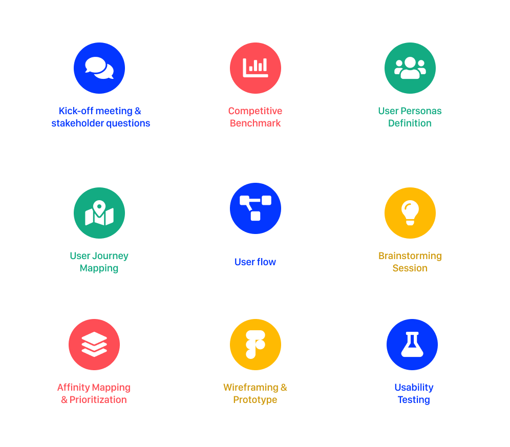
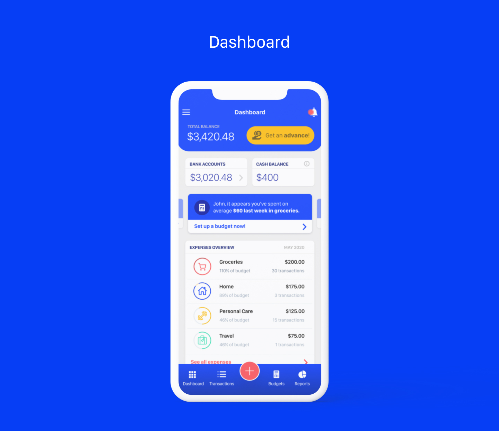
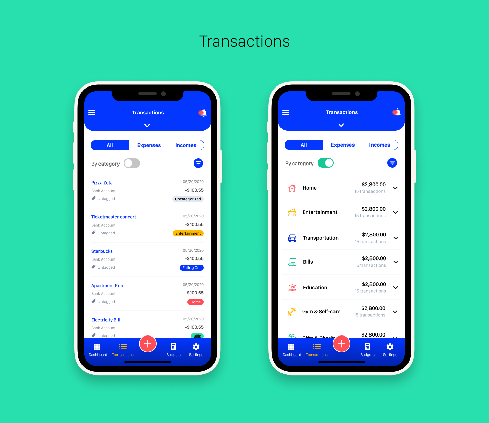
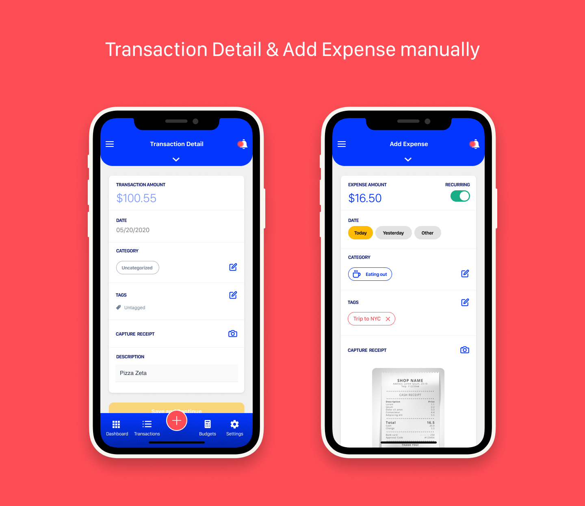
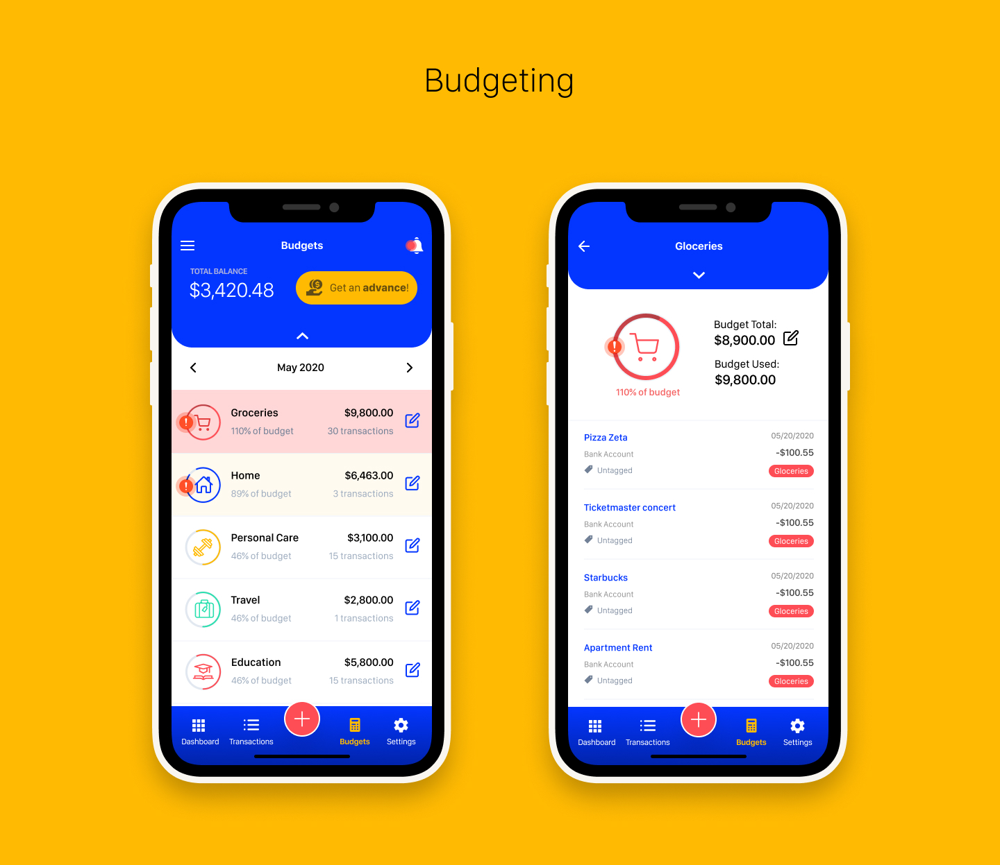
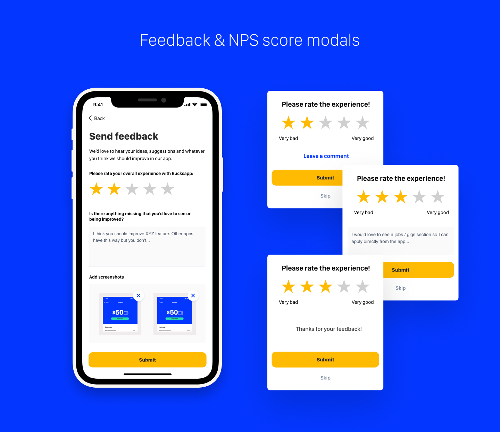
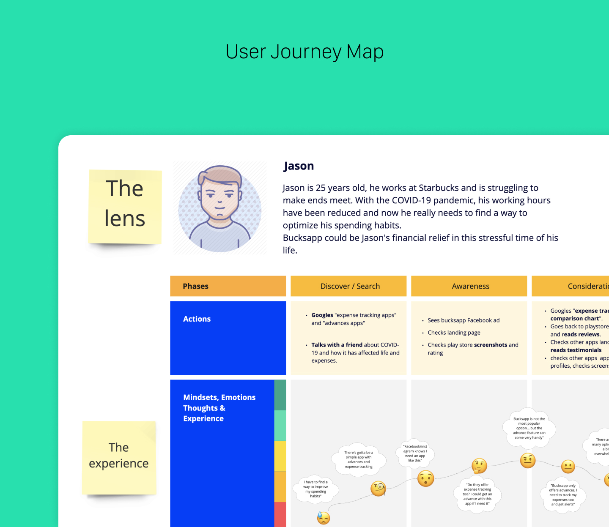

BucksApp aims to be a financial relief for college students in the US by providing “advances” whenever needed. With our current situation (2020 COVID-19 pandemic), the company is looking to improve their business model to reach a wider audience and focus on young adults, not only students.
Come up with an MVP that not only offers loans/advances, but some type of added value to create more engagement with the user. The company’s goal is to identify the user’s main pain points during this pandemic and have an ideation session to come up with new functionalities that could potentially improve the user’s financial lives.
– Understand the company vision and facilitate the product discovery process.
– Identify the more representative bucks app user persona.
– Build the current user journey map to identify gaps and opportunities.
– Decide with the client the features that will make the MVP.
– Design and prototype in Figma.
– Usability Testing to validate design decisions.
– Hand-off and support the dev team during planning and participate in retrospective sessions in an
agile environment.






